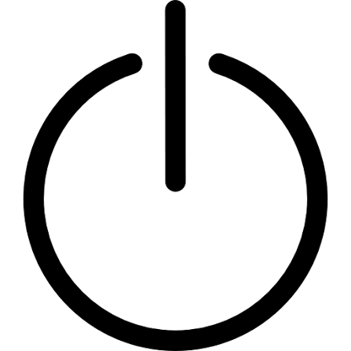
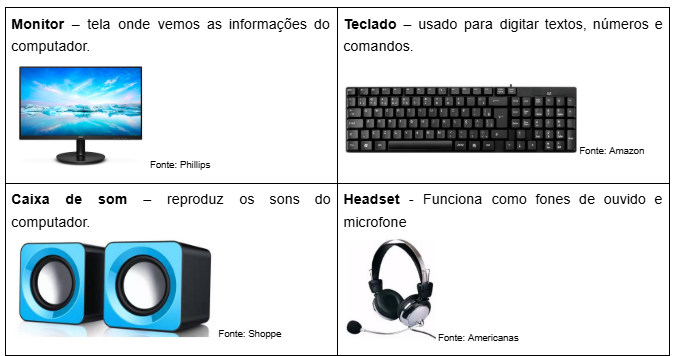
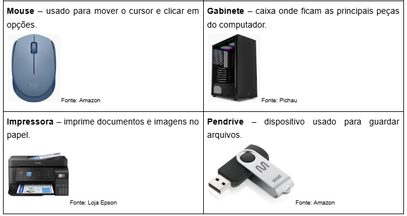
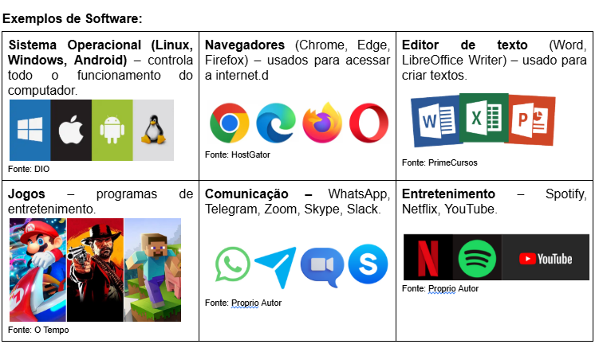
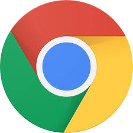
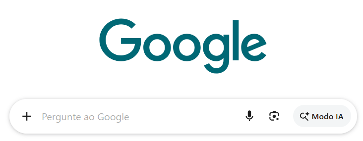
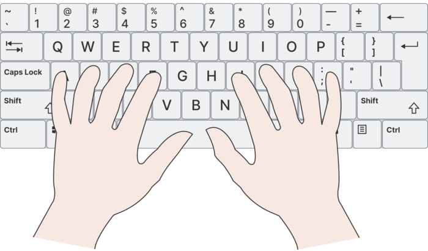
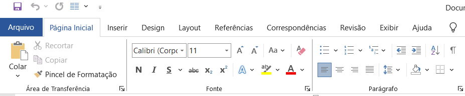
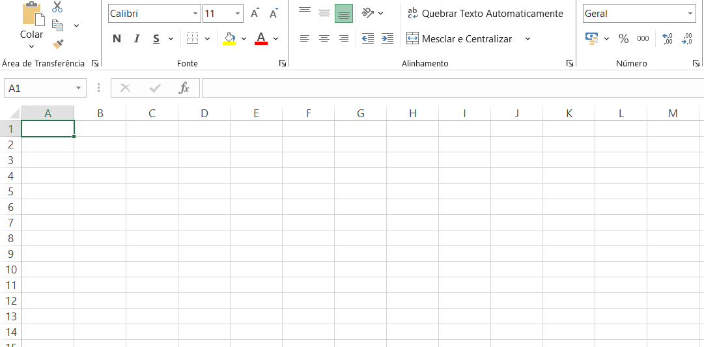

🌟 Tudo que Aprendemos nas Aulas
Como funciona um Computador?
Aprendemos os passos seguros e corretos para ligar e desligar o computador usando o Windows, evitando puxar o cabo da tomada para proteger o sistema e evitar desligar ele pelo botão, mas sim pelo computador.
Atenção!
❌ Nunca desligue o computador puxando o cabo da tomada.
❌ Não pressione o botão de ligar para desligar diretamente (a menos que o computador esteja travado).
✔ Sempre use a opção Desligar no sistema.


O Conceito de Hardware
Dominamos a identificação de todas as partes físicas do computador que podemos tocar, como monitor, teclado, mouse, gabinete, headset e projetores.


O Conceito de Software
Entendemos a parte lógica do sistema: os programas, editores de texto como o LibreOffice Writer e Word, os navegadores (Chrome) e nossos amados jogos.

Como pesquisar qualquer coisa na internet
Podemos pesquisar qualquer coisa na internet com responsabilidade, bom senso e com cuidado para não colocar vírus no computador.


Postura, Ergonomia e Digitação
Exercitamos a postura saudável (costas retas, pés no chão), altura correta da tela(na altura dos olhos) e o uso correto dos dedos no teclado usando marcas em relevo das teclas F e J.


⌨️ Atalhos Essenciais de Teclado
Nossos maiores aliados para produzir mais rápido!
| Atalho | Função | Atalho | Função |
|---|---|---|---|
| Ctrl + C | Copiar conteúdo selecionado | Ctrl + V | Colar conteúdo copiado |
| Ctrl + X | Recortar conteúdo | Ctrl + Z | Desfazer a última ação |
| Ctrl + B | Negrito (Modo de Destaque) | Ctrl + I | Itálico (Texto Inclinado) |
Editor de Texto
Focamos em transformar uma folha em branco em um documento profissional, organizado e bem estruturado.

Planilha
Desmistificamos o bicho-papão das tabelas! Aprendemos que planilhas não são apenas para guardar dados, mas para fazer o computador trabalhar por nós.

📁 Organização de Pastas e Arquivos
Aprendemos a organizar nossa "biblioteca gigante" criando e guardando nossos arquivos nas respectivas pastas destinadas ao Projeto Informática.